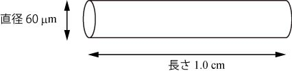
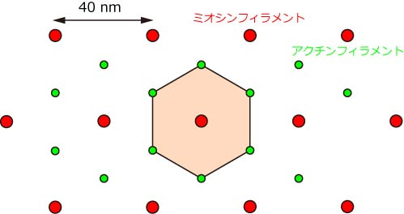
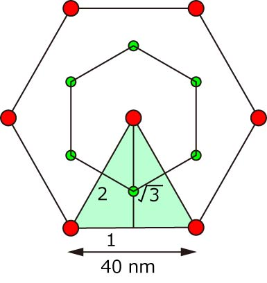
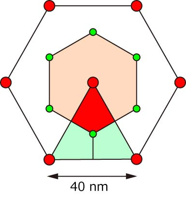

では，ミオシン分子の数を見積もってみましょう．
まず，用意するのは，ちょびっと切り取った筋繊維．

長さ，１ｃｍ，直径６０ミクロンですから，髪の毛ぐらいでしょうか．．．
さて，一本のミオシンフィラメントが断面で占める面積を計算しましょう．

ちょうどこの色がついているところが中央のミオシンフィラメントがしめる面積ですね．
ここを拡大してみると，

まずは，ミオシンフィラメントの六角形がしめる面積のうち，薄緑の面積を考えましょう．
これは簡単ですね，正三角形ですからすべての辺の長さが等しい．
正三角形を真ん中で二つに分離して，それぞれの三角形の辺の比は，
１：２：√３
となります．
一辺の長さは，40nmなので，正三角形の面積は，
２０nm×（２０×√３）nm÷２×２＝４００√３nm２
となります．
さて，前のピンクのエリアに話を戻して，ピンクのエリアと薄緑のエリアとの関係を考えてみましょう．

ピンクのエリアのうち，赤い部分はちょうど先ほどの薄緑の面積の１／３であることがわかります．
ピンクのエリアにはこれが６つあるので，
４００√３nm２×１／３×６＝８００√３nm２
となります．
つまり，一本のミオシンフィラメントが断面で占める面積は，
８００√３nm２
となります．
先ほど，用意した筋繊維の直径は，６０ミクロンなので，
面積＝π×半径の二乗
ミオシンフィラメントの本数＝面積÷ミオシンフィラメントの占める面積
＝３．１４×（３×１０４ｎｍ）２ ÷ ８００√３
＝２×１０６本
となります．
結構な数ですね．
さて，では一本のミオシンフィラメントにはいくつのミオシン分子があるのでしょう？
ミオシンフィラメントの構造を見てみましょう．
これまたきれいな構造です．
双極構造を取っていて，ちょうど中央の０．２ミクロンのところがミオシンの頭部が見られません．
ミオシン分子は１４．３nm周期が３つ並んでいるものと考えてください．
ですので，一本のミオシンフィラメントには，ミオシン分子が，
（１．６ミクロン－０．２ミクロン）÷１４．３nm×３＝３００分子
あるわけです．
また，サルコメアの長さを２．５ミクロンとすると，１ｃｍの筋繊維には，
１ｃｍ÷２．５ミクロン＝４×１０３列
のサルコメアが含まれます．
つまり，ミオシン分子の数は，
２×１０６本×３００分子×４×１０３列＝２．４×１０１２個 ＝２兆個
もの，分子が含まれているのです．
では次に，ミオシン分子の発生する張力を見積もってみましょう．